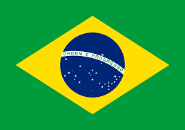

Sobre la Contaminación
La contaminación del suelo
Cuando hablamos de contaminación tendemos a alzar la vista, pero este problema no afecta solo a nuestros cielos. Los suelos, que acogen los cultivos de frutas, verduras u hortalizas, también sufren las consecuencias y sus efectos llegan hasta nosotros a través, por ejemplo, de los alimentos anteriormente mencionados. ¡Ha llegado el momento de cuidar la tierra que yace bajo nuestros pies!

QUÉ ES LA CONTAMINACIÓN DEL SUELO
Este mal invisible aparece cuando la concentración de contaminantes en la superficie es tan alta que daña la biodiversidad del suelo y pone en riesgo nuestra salud a través, sobre todo, de la alimentación. Precisamente actividades como la ganadería y la agricultura intensivas suelen emplear fármacos, plaguicidas y fertilizantes que contaminan los campos, al igual que ocurre con los metales pesados y otras sustancias químicas de origen natural o antropogénico.
Una Amenaza Global
La contaminación del suelo es una amenaza global especialmente grave en regiones como Europa, Eurasia, Asia y África del Norte, como revela la Organización de las Naciones Unidas para la Alimentación y la Agricultura (FAO). Este organismo internacional asegura también que la degradación intensa o moderada afecta ya a un tercio del suelo mundial, y su recuperación es tan lenta que se necesitarían 1.000 años para crear 1 centímetro de capa arable superficial.
Consecuencias de la contaminación del agua
La contaminación del agua tiene efectos devastadores para la protección del medio ambiente y la salud del planeta. Algunas de las consecuencias más importantes de los diferentes tipos de contaminación en el agua son: la destrucción de la biodiversidad, la contaminación de la cadena alimentaria que supone la transmisión tóxica a los alimentos y la escasez del agua potable.
El Mar más contaminado
El mar más contaminado es el Mediterráneo. Las costas de Francia, España e Italia son las más contaminadas del Planeta. Los siguientes en la lista son el Mar Caribe, el Mar Celta y el Mar del Norte. ¿La causa? La basura marina, que constituye uno de los más graves problemas de contaminación del mar. Más del 60% de la basura que llega son plásticos. Cada año llegan 6,4 millones de toneladas de plástico al mar.
Causas de la contaminación en el agua
Como en todo lo que afecta los recursos naturales más preciados, el ser humano y su intervención sobre la naturaleza es el gran responsable de la contaminación del agua (o contaminación hídrica). Hay que saber que sólo el 3% del agua del planeta es agua dulce (el agua que se puede beber) y, aunque existen mecanismos de potabilización, como la depuración o la desalación, que ayudan al consumo de agua, lo primero y más urgente por hacer es evitar su contaminación.
¿Cuáles son los países más contaminantes del mundo?
Los tres países que más contaminan por sus emisiones de dióxido de carbono (CO2) son, no sorprendentemente, los tres países más industrializados del mundo: China, Estados Unidos e India. En cambio, el ranking es muy diferente si analizamos la huella de carbono per cápita de los países. En este caso, Catar, Kuwait y Arabia Saudita encabezan la clasificación.
Ranking Mundial TOP 6 Contaminación Co2
| Pais | Nombree | Emisiones en Toneladas |
|---|---|---|
| China | 9899,3 | |
| Estados Unidos | 4457,2 | |
| |
India | 2302,3 |
| Rusia | 1482,2 | |
| |
Japón | 1027 |
| |
Irán | 678,2 |
La India, el país que más plástico tira al mar
En 2020, el país asiático arrojó a las aguas marinas unos 126,5 millones de kilos de plástico, que atendiendo a su peso equivaldría a 250.000 delfines mulares.
Ranking Mundial TOP 6 Contaminación en Oceanos
| Pais | Nombree | Expresado en Kilos de plastico |
|---|---|---|
| India | 126,5 millones de kilos de plástico | |
| |
China | 70,7 millones de kilos de plástico |
| |
Indonesia | 56,3 millones de kilos de plástico |
|  | Brasil | 38 millones de kilos de plástico |
| |
Tailandia | 22,8 millones de kilos de plástico |
| |
Mexico | 3,5 millones de kilos de plástico |
Videos
Causas y contaminación del agua
Contaminación del Suelo
Contaminación del aire
Calendario fechas